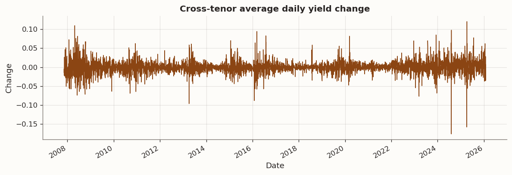
2026-02-14
I came across a paper on Graph-Regularized PCA (Briola et al. (2026)) and it reminds me of some graph-regularized regression tasks that I worked on before. I decided to write a series on this topic and start with a wrong application.
Principal component analysis is optimal under an isotropic-noise benchmark and a Euclidean maturity geometry, yet constant-maturity yield curves are indexed by an ordered tenor axis with localized dependence. Graph-regularized PCA adds a Laplacian roughness penalty to the PCA objective and introduces a maturity-aware bias-variance trade-off. This note evaluates PCA and GR-PCA on Japanese Ministry of Finance constant-maturity JGB yields with short rolling train-test windows and frozen out-of-sample reconstruction. The central question is whether any effect is concentrated in higher components, especially the incremental contribution of PC3. A paper-inspired graph-learning step then infers a data-driven graph and compares it with two structural priors
While this analysis is heavily inspired by Briola et al. (2026), we use a dense GLRM adaptation tailored to term-structure data.
Dense factors (no \ell_1 sparsity) The original framework includes sparsity-promoting terms in some specifications. For a constant-maturity yield curve, dense loadings are economically preferable because all tenors should contribute smoothly to latent factors. We therefore use the dense masked GLRM formulation.
Normalized Laplacian regularization We regularize with the symmetric normalized Laplacian, \widetilde{L} = I - D^{-1/2} A D^{-1/2}. Its bounded spectrum keeps graph penalties numerically stable across rolling windows. In the GLRM parameterization, we tune (\tau,\rho) and map to \lambda_f=\tau(1-\rho) and \lambda_s=\tau\rho.
The data are Japanese Ministry of Finance constant-maturity JGB yields. The analysis uses a stable tenor subset in years and works with daily yield changes. Standardization is computed on each training window only, and train mean and standard deviation are applied to the test window.
For each rolling block we fit a masked low-rank GLRM with optional graph regularization. Let Z\in\mathbb{R}^{n\times p} denote standardized data, U\in\mathbb{R}^{n\times k} scores, and V\in\mathbb{R}^{p\times k} loadings. The model minimizes masked reconstruction loss plus graph roughness and ridge terms.
We use a tenor graph Laplacian \widetilde L_f and tune dimensionless regularization parameters (\tau,\rho) with mapping
\lambda_s=\tau\rho,\qquad \lambda_f=\tau(1-\rho).
In this notebook, regularization is primarily on the feature graph (tenor axis), with nested time-series validation selecting (\tau,\rho) window by window.
Let X\in\mathbb{R}^{n\times p} denote the yield-change panel, with rows indexed by dates (observations) and columns indexed by tenors (features). Missing entries are allowed and are encoded as np.nan. We write \Omega\subset\{1,\dots,n\}\times\{1,\dots,p\} for the observed-entry set and use P_\Omega(\cdot) for the projection that keeps observed entries and sets missing entries to zero. After train-window standardization, the working matrix is Z.
The implemented estimator is a masked two-sided graph-regularized low-rank model:
\min_{U\in\mathbb{R}^{n\times k},\,V\in\mathbb{R}^{p\times k}}\; \tfrac12\left\|P_\Omega\!\left(Z-UV^\top\right)\right\|_F^2 \; +\; \tfrac12\lambda_s\,\operatorname{tr}(U^\top L_s U) \; +\; \tfrac12\lambda_f\,\operatorname{tr}(V^\top L_f V) \; +\; \tfrac12\mu_u\|U\|_F^2 \; +\; \tfrac12\mu_v\|V\|_F^2.
Here U contains latent example embeddings (scores), V contains feature loadings, L_s is the example/day graph Laplacian, and L_f is the feature/tenor graph Laplacian. The ridge terms with \mu_u,\mu_v>0 improve coercivity and numerical conditioning.
For a weighted graph with symmetric adjacency (w_{ij}), the Laplacian quadratic form admits the pairwise-difference identity
\operatorname{tr}(U^\top L_s U)=\tfrac12\sum_{i,j} w_{ij}^{(s)}\,\|u_i-u_j\|_2^2,
which encourages adjacent dates to have similar latent coordinates. Likewise,
\operatorname{tr}(V^\top L_f V)=\tfrac12\sum_{i,j} w_{ij}^{(f)}\,\|v_i-v_j\|_2^2,
which encourages adjacent tenors to have similar loading coordinates. In this notebook, day-chain regularization acts on U and tenor-chain regularization acts on V, so each penalty targets a different object.
The factorization is not unique. For any orthogonal matrix R\in\mathbb{R}^{k\times k} with R^\top R=I, the pair (U,V) and the rotated pair (UR,VR) induce the same product:
(UR)(VR)^\top = U R R^\top V^\top = UV^\top.
Therefore individual columns of V are not uniquely identified as fixed population eigenvectors, and raw column-wise comparisons across windows can be misleading. Meaningful comparison is done at the subspace level or after alignment, which is why the notebook reports subspace drift and Procrustes-aligned loading drift.
Classical spectral feature-graph GR-PCA regularizes eigendirections through objectives of the form \max_V\operatorname{tr}(V^\top(\Sigma-\alpha L)V) under orthogonality constraints. Jiang-style GraphPCA formulations emphasize observation-graph structure, while Paradkar-style approaches place graph regularization in low-rank matrix factorization form. The present implementation belongs to this GLRM family: it handles missing data directly through P_\Omega, does not rely on orthogonality constraints, and unifies feature-side and example-side graph information within one objective.
Without orthogonality constraints, one-sided regularization can leave weakly controlled scaling directions in practice. Ridge penalties on both U and V reduce this degeneracy and improve optimizer stability. These conditions support stable estimation but do not imply global uniqueness of the factorization.
Laplacians are spectrally normalized, and regularization is parameterized by total strength \tau\ge 0 and allocation \rho\in[0,1]:
\lambda_s=\tau\rho,\qquad \lambda_f=\tau(1-\rho).
This separates overall shrinkage intensity from how shrinkage is split between temporal smoothness (U-side) and tenor smoothness (V-side). The parameterization is dimensionless, comparable across windows, and more interpretable than tuning raw penalty magnitudes independently.
The solver uses alternating PALM-style gradient updates for U and V with masked residuals, together with backtracking steps that enforce monotone objective decrease. The algorithm targets convergence to a stationary point of this nonconvex objective, not necessarily a global optimum.
These modeling choices motivate the next empirical block, which compares no-graph, tenor-only, day-only, and two-graph specifications before rolling out-of-sample evaluation.

The daily yield-change series reveals several distinct volatility regimes, including the 2008 financial crisis, the 2013 Bank of Japan policy shift, and the 2020–2022 yield curve control adjustments. These regime changes are part of the estimation challenge for rolling-window methods and motivate the use of short one-year training windows that adapt to local market conditions.
The tenor graph uses only adjacent maturities and scales edge strength by inverse squared maturity gap. This prior encodes a local smoothness view in which neighboring maturities move coherently and high-frequency oscillation is penalized
The hierarchical graph adds a shallow economic segmentation. It reinforces a local 7Y to 10Y block interpreted as a deliverable region and weakens continuity across the 10Y to 15Y boundary treated as a structural transition zone. This retains continuity while allowing a boundary-like bend near that segment
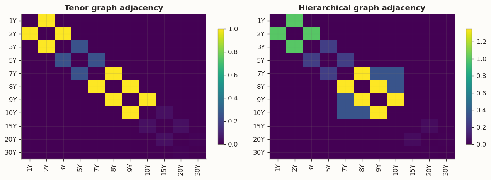
Prediction A is a variance-reduction channel. In one-year samples, estimation noise and maturity-specific disturbances can generate high-frequency variation. Tenor-side Laplacian shrinkage should primarily reduce loading roughness \operatorname{tr}(V^\top L_f V), and day-side shrinkage should primarily reduce score roughness \operatorname{tr}(U^\top L_s U).
Prediction B is a bias-dominance channel. If the local signal is already smooth and well identified at the subspace level, additional shrinkage can increase bias while providing little reduction in out-of-sample loss.
These channels imply testable patterns. First, tenor regularization should lower loading roughness more than day-only regularization, while day regularization should lower score roughness more than tenor-only regularization. Second, stability gains should appear in Procrustes and subspace-drift diagnostics rather than in raw unaligned loading columns. Third, out-of-sample reconstruction gains, if present, are expected to be modest and concentrated in higher-rank incremental contributions rather than broad improvements at every rank.
\widehat X_{\mathrm{test},k} = (X_{\mathrm{test}}\widehat V_k)\widehat V_k^\top
\ell_{k,t} = \frac{1}{p}\frac{\|X_{\mathrm{test}} - \widehat X_{\mathrm{test},k}\|_F^2}{n_{\mathrm{test}}},
\Delta \ell_{3,t} = \ell_{2,t} - \ell_{3,t},
\Delta \ell_{4,t} = \ell_{3,t} - \ell_{4,t}.
The exercise is explicitly falsifiable and does not presuppose improvement.
Each outer window uses one year for training, three months for testing, and advances by one month. The sample begins on the first date where all eleven tenors have real observations, which is when the 30-year JGB starts trading in late 1999.
Inside each outer training block, (\tau,\rho) is selected with a nested time-series split that uses the first nine months as inner-train and the last three months as validation. The tuning target is validation masked reconstruction loss at k=4 (with an automatic fallback to lower effective rank if needed in a given window).
Conservative selection rule (loss-first): evaluate the validation surface over the (\tau,\rho) grid, find the minimum loss, keep candidates within a small tolerance neighborhood, and choose the smallest admissible \tau (with stability tie-breaking when available).
Final outer test evaluation refits on the full outer train block with the selected (\tau,\rho) and applies frozen train-window scaling to outer test data with no leakage. Out-of-sample losses are reported for k=1,2,3,4 along with incremental gains \Delta\ell_3 and \Delta\ell_4.
Before walk-forward evaluation, we fit four GLRM specifications on the full sample to isolate how feature-graph and example-graph regularization change loading shapes at fixed rank.
| tau_grid_value | feature_graph | example_graph | tau | rho | lambda_s | lambda_f | train_masked_recon_error | normalized_train_objective | feature_roughness | score_roughness | |
|---|---|---|---|---|---|---|---|---|---|---|---|
| model | |||||||||||
| A: No graphs | 0.0100 | False | False | 0.0000 | 0.0000 | 0.0000 | 0.0000 | 0.0518 | 1268.9556 | nan | nan |
| B: Tenor graph only | 0.0100 | True | False | 0.0100 | 0.0000 | 0.0000 | 0.0100 | 0.0518 | 1268.9556 | 1.9660 | nan |
| C: Day graph only | 0.0100 | False | True | 0.0100 | 1.0000 | 0.0100 | 0.0000 | 0.0523 | 1281.8185 | nan | 127236.1061 |
| D: Tenor + day graphs | 0.0100 | True | True | 0.0100 | 0.5000 | 0.0050 | 0.0050 | 0.0519 | 1272.2343 | 1.9668 | 156941.4480 |
| A: No graphs | 0.0300 | False | False | 0.0000 | 0.0000 | 0.0000 | 0.0000 | 0.0518 | 1268.9556 | nan | nan |
| B: Tenor graph only | 0.0300 | True | False | 0.0300 | 0.0000 | 0.0000 | 0.0300 | 0.0518 | 1268.9556 | 1.9660 | nan |
| C: Day graph only | 0.0300 | False | True | 0.0300 | 1.0000 | 0.0300 | 0.0000 | 0.0544 | 1333.8564 | nan | 82740.2942 |
| D: Tenor + day graphs | 0.0300 | True | True | 0.0300 | 0.5000 | 0.0150 | 0.0150 | 0.0527 | 1293.1878 | 1.9683 | 110625.8373 |
| A: No graphs | 0.1000 | False | False | 0.0000 | 0.0000 | 0.0000 | 0.0000 | 0.0518 | 1268.9556 | nan | nan |
| B: Tenor graph only | 0.1000 | True | False | 0.1000 | 0.0000 | 0.0000 | 0.1000 | 0.0518 | 1268.9556 | 1.9660 | nan |
| C: Day graph only | 0.1000 | False | True | 0.1000 | 1.0000 | 0.1000 | 0.0000 | 0.0533 | 1306.7210 | nan | 19240.6561 |
| D: Tenor + day graphs | 0.1000 | True | True | 0.1000 | 0.5000 | 0.0500 | 0.0500 | 0.0552 | 1352.8938 | 1.9981 | 53380.2771 |
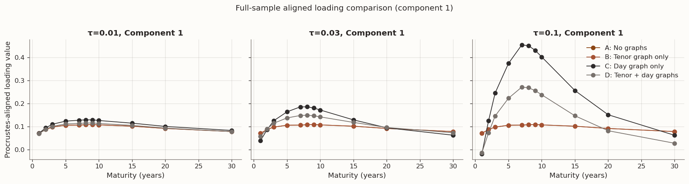
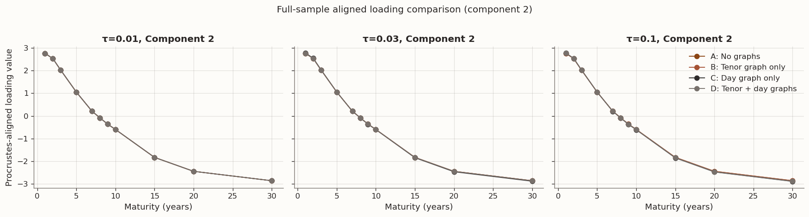
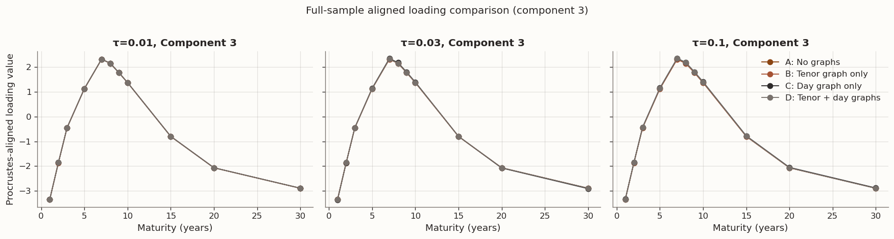
In GLRM, factor columns are rotation-invariant: two fits can have essentially identical reconstruction quality while their raw loading columns differ by an orthogonal transformation or permutation. For that reason, the full-sample comparison first aligns each model to the no-graph baseline with orthogonal Procrustes and then applies a consistent component ordering before plotting. Under this alignment, apparent differences in “PC2/PC3” from raw vectors are often much smaller than they look without alignment, and interpretation should focus on smoothness diagnostics as well as fit quality—especially feature roughness \mathrm{tr}(V^\top L_f V) and score roughness \mathrm{tr}(U^\top L_s U)—rather than on unaligned column shapes alone.
| tau_t_mean | tau_t_median | tau_t_min | tau_t_max | rho_t_mean | rho_t_median | rho_t_min | rho_t_max | lambda_s_t_mean | lambda_s_t_median | lambda_s_t_min | lambda_s_t_max | lambda_f_t_mean | lambda_f_t_median | lambda_f_t_min | lambda_f_t_max | |
|---|---|---|---|---|---|---|---|---|---|---|---|---|---|---|---|---|
| method | ||||||||||||||||
| GR-Hier | 0.0000 | 0.0000 | 0.0000 | 0.0000 | 0.0000 | 0.0000 | 0.0000 | 0.0000 | 0.0000 | 0.0000 | 0.0000 | 0.0000 | 0.0000 | 0.0000 | 0.0000 | 0.0000 |
| GR-Tenor | 0.0000 | 0.0000 | 0.0000 | 0.0000 | 0.0000 | 0.0000 | 0.0000 | 0.0000 | 0.0000 | 0.0000 | 0.0000 | 0.0000 | 0.0000 | 0.0000 | 0.0000 | 0.0000 |
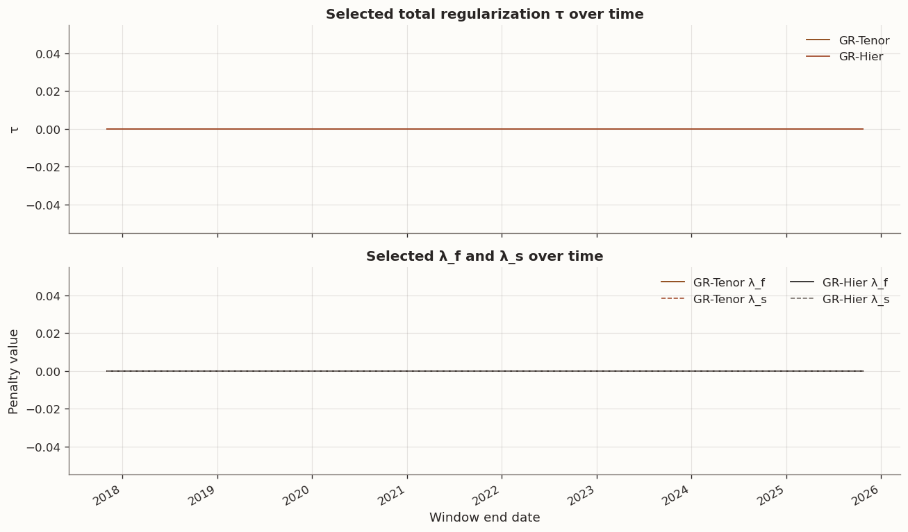
The rolling evaluation below reports out-of-sample masked reconstruction loss for four GLRM specifications: PCA (no graph), Tenor-only graph regularization, Day-only graph regularization, and Tenor+Day regularization. Each metric is computed on frozen test data with no information leakage from training. We examine total reconstruction accuracy at k=3,4, loading stability via Procrustes and subspace-drift metrics, roughness diagnostics, and formal statistical comparisons.
We use a fixed regularization level in the rolling comparison to isolate model behavior: \tau_{\text{roll}}=3\times 10^{-2}. The four models are PCA (no graph), Tenor-only (\rho=0), Day-only (\rho=1), and Tenor+Day (\rho=0.5), with the same rank k in each window.
For each window, the feature graph Laplacian is the tenor-chain \widetilde L_f and the example graph Laplacian is rebuilt on training dates as a day-chain \widetilde L_s. Out-of-sample losses are computed with masked reconstruction error on frozen test blocks for k=1,2,3,4, with no train-test leakage.
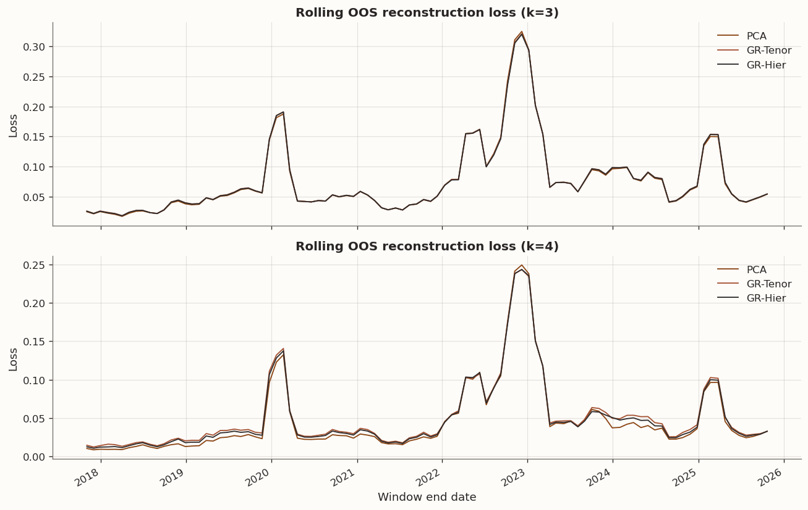
| k | mean | median | p90 | |
|---|---|---|---|---|
| method | ||||
| GR-Hier | 3 | 0.0769 | 0.0544 | 0.1540 |
| GR-Hier | 4 | 0.0498 | 0.0316 | 0.1068 |
| GR-Tenor | 3 | 0.0771 | 0.0545 | 0.1539 |
| GR-Tenor | 4 | 0.0516 | 0.0341 | 0.1080 |
| PCA | 3 | 0.0765 | 0.0539 | 0.1547 |
| PCA | 4 | 0.0470 | 0.0277 | 0.1035 |
Day-graph regularization primarily targets score smoothness through \mathrm{tr}(U^\top L_s U), while tenor-graph regularization primarily targets loading smoothness through \mathrm{tr}(V^\top L_f V). The four-model rolling comparison separates these channels by construction (PCA, Tenor-only, Day-only, and Tenor+Day) under a common rank and fixed \tau_{\text{roll}}.
For GLRM, raw PC2/PC3 vectors are not directly comparable across windows because factors are rotation-invariant. Stability interpretation should therefore rely on drift diagnostics such as loading Procrustes drift and subspace-angle drift, not on unaligned column plots alone.
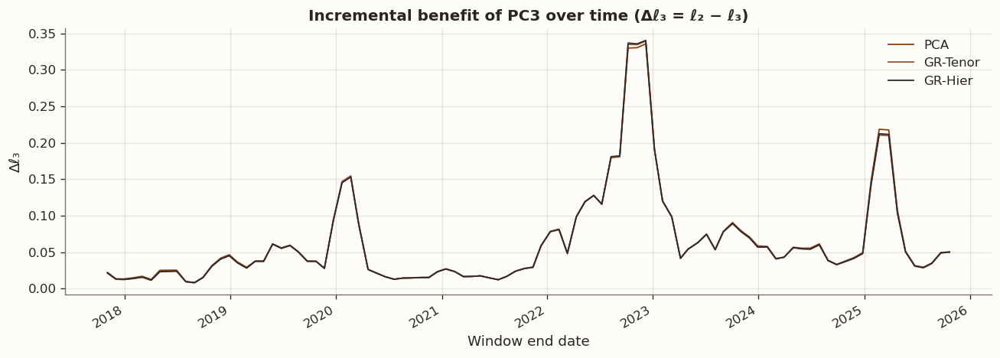
| mean | median | p90 | win_rate_Δℓ3_vs_pca | win_rate_ℓ3_vs_pca | |
|---|---|---|---|---|---|
| method | |||||
| GR-Hier | 0.0644 | 0.0418 | 0.1442 | 0.2347 | 0.2143 |
| GR-Tenor | 0.0642 | 0.0416 | 0.1436 | 0.2245 | 0.2143 |
| PCA | 0.0648 | 0.0423 | 0.1473 | nan | nan |
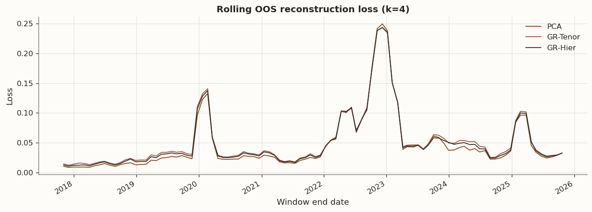
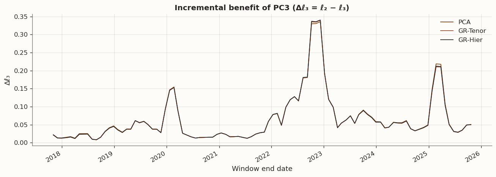
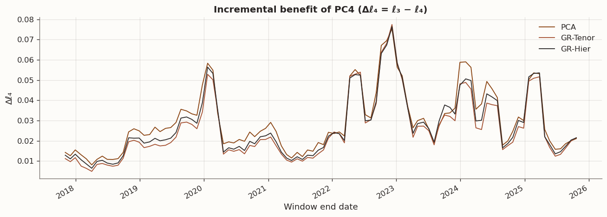
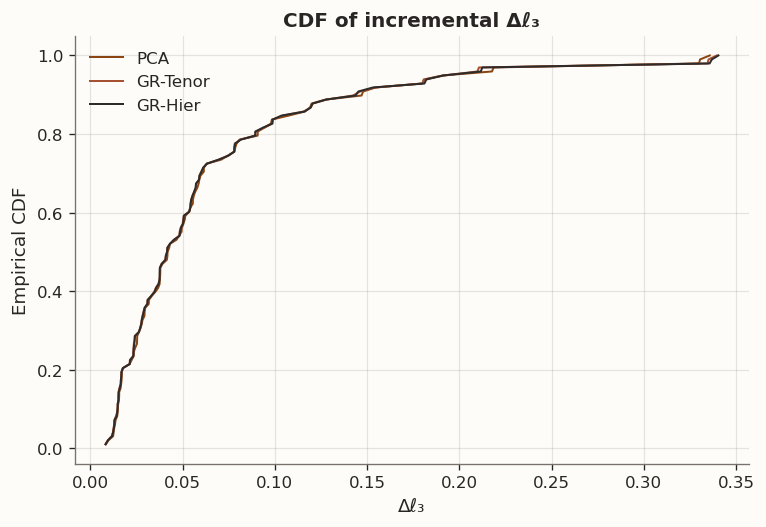
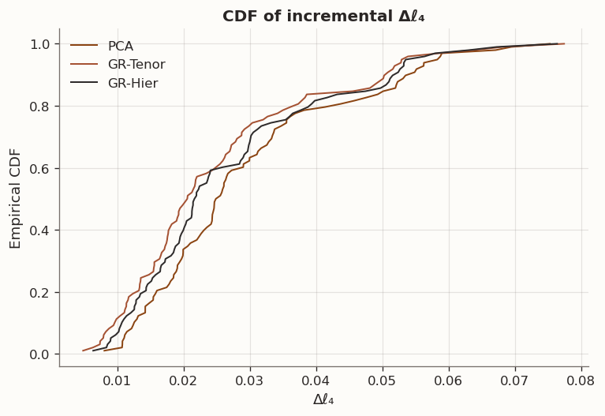
| mean(ℓ4) | median(ℓ4) | p90(ℓ4) | mean(Δℓ3) | median(Δℓ3) | p90(Δℓ3) | mean(Δℓ4) | median(Δℓ4) | p90(Δℓ4) | win_Δ3 | win_Δ4 | win_ℓ4 | |
|---|---|---|---|---|---|---|---|---|---|---|---|---|
| method | ||||||||||||
| GR-Hier | 0.0498 | 0.0316 | 0.1068 | 0.0644 | 0.0418 | 0.1442 | 0.0271 | 0.0218 | 0.0518 | 0.2347 | 0.1429 | 0.1429 |
| GR-Tenor | 0.0516 | 0.0341 | 0.1080 | 0.0642 | 0.0416 | 0.1436 | 0.0255 | 0.0206 | 0.0505 | 0.2245 | 0.0714 | 0.1020 |
| PCA | 0.0470 | 0.0277 | 0.1035 | 0.0648 | 0.0423 | 0.1473 | 0.0296 | 0.0252 | 0.0539 | nan | nan | nan |
The incremental benefit plots for PC3 and PC4 connect directly to the regularization mechanism described in the theory section above. Improvements in \Delta\ell_3 or \Delta\ell_4 would be consistent with regularization helping most where eigen-gaps are smaller and sample covariance noise destabilizes higher components. The empirical CDFs show that the distributions of \Delta\ell_3 and \Delta\ell_4 overlap heavily across methods, and win rates near 50% suggest that, in this p\approx 11 setting, the Laplacian penalty does not provide a systematic edge in extracting higher-order principal components.
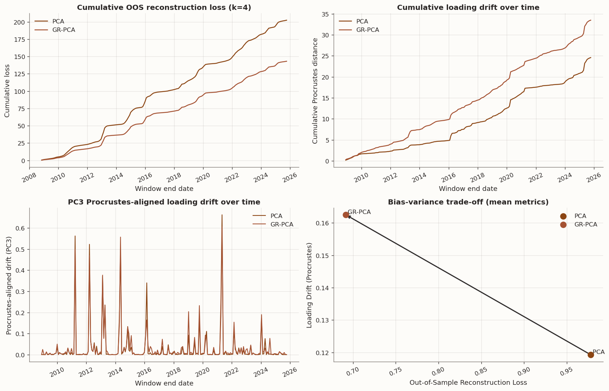
The walk-forward dashboard consolidates the preceding analysis into four views. Cumulative OOS loss and cumulative loading drift both evolve in near-lockstep between PCA and GR-PCA. The PC3 Procrustes-aligned loading-drift panel shows episodic divergence but no sustained advantage for regularization. The bias–variance scatter in the bottom-right summarizes the mean trade-off: PCA and GR-PCA occupy nearby positions in loss–drift space, confirming that regularization provides limited net benefit in this p \approx 11 setting.
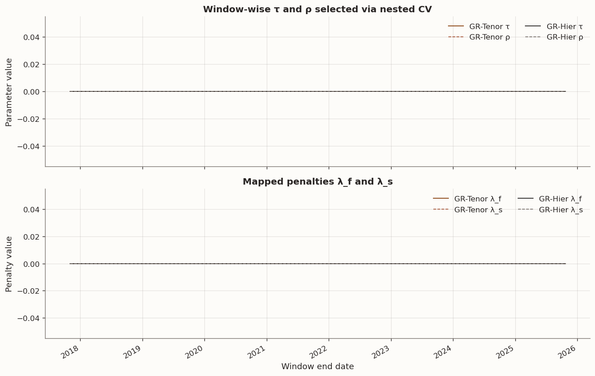
The tuning path is expressed through (\tau_t,\rho_t) and the implied penalties (\lambda_{s,t},\lambda_{f,t}), which are directly comparable across windows. Under a conservative selection rule, the model typically stays in a moderate-regularization regime while still allowing nonzero smoothing when validation evidence supports it.
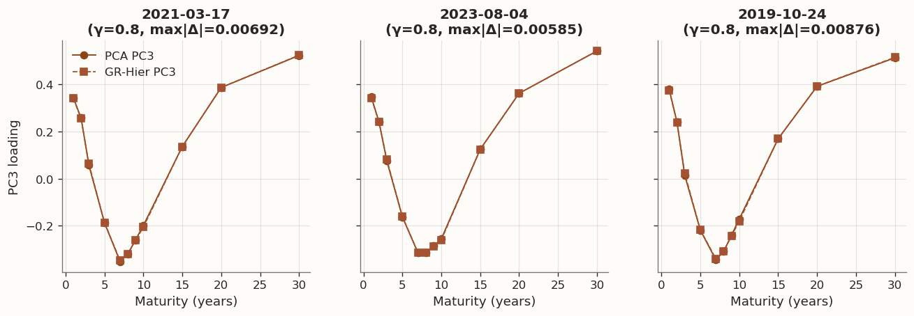
Vparray([[-0.18255151, -0.51346106, 0.38008674, 0.71140151],
[-0.23539797, -0.4926249 , 0.24014011, -0.33660071],
[-0.28933987, -0.37609456, 0.01333174, -0.43848679],
[-0.32618611, -0.16717014, -0.21927346, -0.26260003],
[-0.33479754, 0.01828246, -0.34584389, 0.10170119],
[-0.33900621, 0.06226086, -0.30973962, 0.14004492],
[-0.34245082, 0.09627473, -0.24113874, 0.16860779],
[-0.341718 , 0.12391911, -0.1719619 , 0.18448618],
[-0.32608142, 0.2565113 , 0.16959141, 0.04387779],
[-0.29390123, 0.32358646, 0.39221203, -0.05522828],
[-0.25958125, 0.3534739 , 0.51356721, -0.14826845]])Vgarray([[ 0.18276781, -0.51330237, 0.37562821, 0.68538351],
[ 0.23541289, -0.49124558, 0.23943705, -0.25485345],
[ 0.2891801 , -0.37740016, 0.02117258, -0.47665987],
[ 0.32616503, -0.16742543, -0.21807862, -0.31801981],
[ 0.33483483, 0.01950521, -0.34184539, 0.10315988],
[ 0.3390114 , 0.06241188, -0.30875693, 0.14894 ],
[ 0.34242599, 0.09572695, -0.24454492, 0.18173041],
[ 0.34171508, 0.12244581, -0.18072103, 0.20031457],
[ 0.32608326, 0.25687588, 0.16959249, 0.0539944 ],
[ 0.29391107, 0.32401979, 0.39297888, -0.05392568],
[ 0.25958828, 0.35401968, 0.51548167, -0.1586115 ]])The PC3 visualization is interpreted after alignment, not as a comparison of uniquely identified eigenvectors. In GLRM, individual columns can rotate within the latent space while preserving fit, so raw column differences are not sufficient evidence of structural change. The economically relevant question is whether regularization changes roughness and stability diagnostics: lower \mathrm{tr}(V^\top L_f V) for tenor-side smoothness, lower \mathrm{tr}(U^\top L_s U) for day-side smoothness, and lower aligned drift under Procrustes or subspace metrics across windows.
To assess whether the observed loss differences are statistically significant, we apply a Diebold–Mariano style test with Newey–West HAC standard errors to account for the serial dependence introduced by overlapping rolling windows. The null hypothesis is equal predictive ability (mean loss difference equals zero) against the one-sided alternative that the GR variant improves on PCA.
| k | mean_d | DM_stat | p_one_sided_mean_less_0 | win_rate_d_less_0 | hac_lag | |
|---|---|---|---|---|---|---|
| variant | ||||||
| GR-Hier | 3 | -0.0003 | -3.1398 | 0.0008 | 0.4444 | 2 |
| GR-Tenor | 3 | -0.0004 | -3.2073 | 0.0007 | 0.4010 | 2 |
| GR-Hier | 4 | -0.0003 | -2.1294 | 0.0166 | 0.3527 | 2 |
| GR-Tenor | 4 | -0.0005 | -1.9914 | 0.0232 | 0.3285 | 2 |
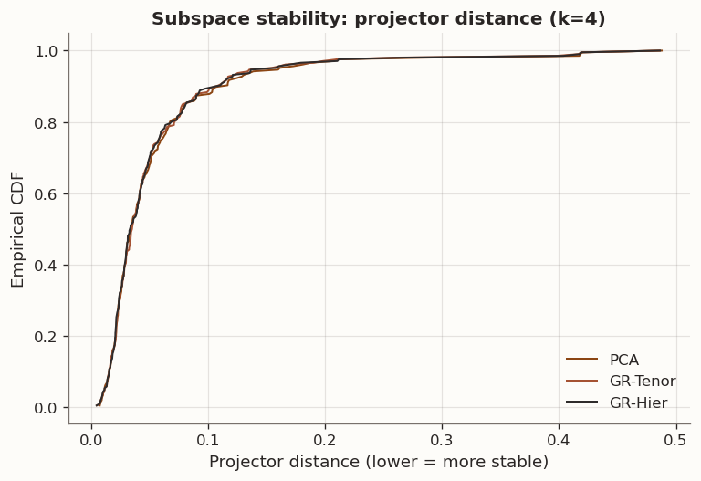
| mean | median | p90 | |
|---|---|---|---|
| method | |||
| GR-Hier | 0.054 | 0.033 | 0.107 |
| GR-Tenor | 0.054 | 0.035 | 0.107 |
| PCA | 0.055 | 0.034 | 0.112 |
| mean_l3 | median_l3 | p90_l3 | mean_l4 | median_l4 | p90_l4 | mean_stab | median_stab | p90_stab | win_l3_vs_pca | win_l4_vs_pca | win_stab_vs_pca | |
|---|---|---|---|---|---|---|---|---|---|---|---|---|
| method | ||||||||||||
| GR-Hier | 0.1047 | 0.0562 | 0.2387 | 0.0568 | 0.0320 | 0.1274 | 0.0542 | 0.0333 | 0.1071 | 0.4444 | 0.3527 | 0.5049 |
| GR-Tenor | 0.1046 | 0.0561 | 0.2387 | 0.0566 | 0.0320 | 0.1271 | 0.0543 | 0.0349 | 0.1069 | 0.4010 | 0.3285 | 0.4417 |
| PCA | 0.1050 | 0.0562 | 0.2387 | 0.0571 | 0.0320 | 0.1292 | 0.0554 | 0.0342 | 0.1116 | nan | nan | nan |
The stability analysis measures how much the estimated loading matrix drifts between consecutive windows using Procrustes distance. The CDF and summary table show that PCA loadings are at least as stable as GR-PCA loadings in this sample. This is notable because one might expect regularization to smooth dynamics; here, window-to-window tuning variation can offset that effect.
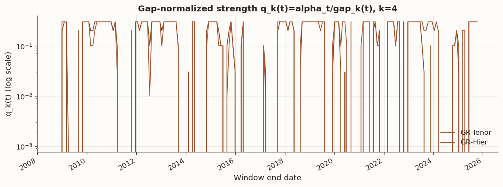
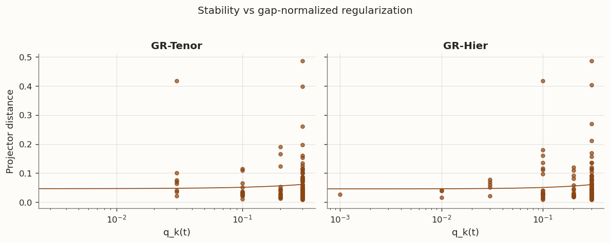
| min | median | max | |
|---|---|---|---|
| method | |||
| GR-Hier | 0.0000 | 0.2000 | 0.3000 |
| GR-Tenor | 0.0000 | 0.2000 | 0.3000 |
If spikes in selected \tau_t coincide with spikes in loading drift, weaker GR-PCA stability is consistent with time-varying regularization pressure. If \tau_t remains modest while GR methods still show elevated instability, the more plausible channels are noisy window-level selection or graph misspecification rather than a simple over-regularization effect.
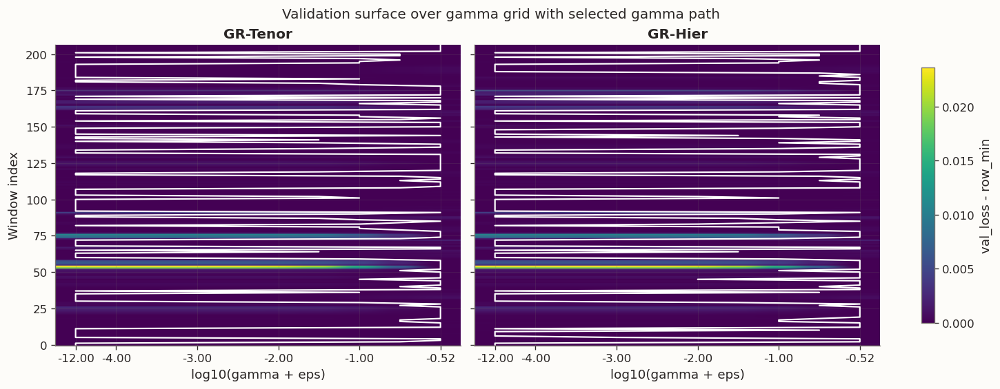
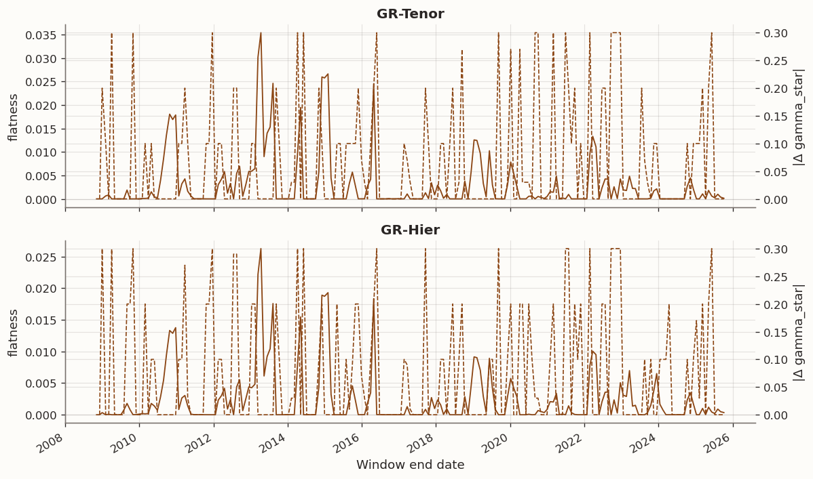
If the validation surface is flat while selected (\tau_t,\rho_t) moves materially between adjacent windows, instability is selection-driven rather than structural. If the surface is sharp and selections remain stable but loading-drift diagnostics still deteriorate, instability is more consistent with broader nonstationarity or graph mismatch.
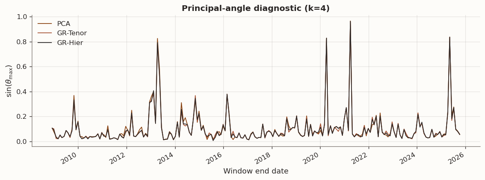
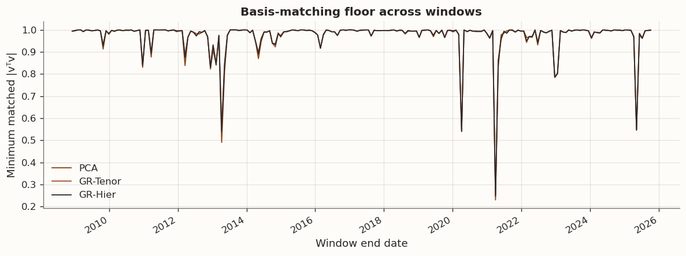
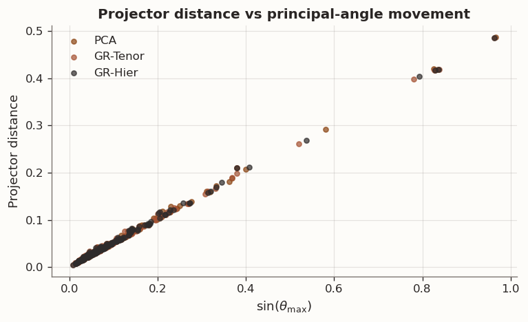
If loading-alignment diagnostics are stable while component-level matching varies, the apparent instability is mostly relabeling/sign ambiguity rather than material movement. Sustained increases in Procrustes distance indicate genuine rotation of the estimated factor-loading geometry across windows.
A paper-inspired approximation is used to infer a sparse conditional-dependence graph on standardized changes. The preferred estimator is Graphical Lasso with cross-validated penalization when available. A neighborhood-selection fallback is used otherwise. Inferred edge weights are absolute off-diagonal precision entries and are compared with each structural prior using edge overlap and weight-alignment diagnostics
| M Edges | Jaccard Top M | Spearman Union Support | |
|---|---|---|---|
| Prior | |||
| tenor | 10 | 0.8182 | 0.1773 |
| hierarchy | 13 | 0.7333 | 0.2363 |
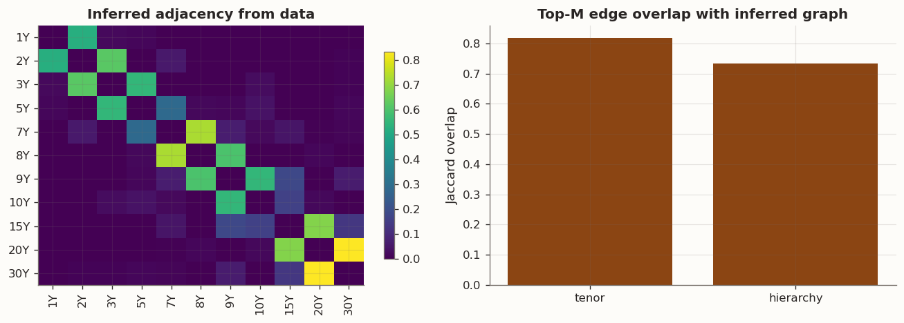
The inferred precision graph concentrates conditional dependence between adjacent tenors, consistent with the local structure assumed by the tenor-chain prior. Jaccard overlap and Spearman rank correlation indicate moderate alignment with both structural priors on edge topology, though the hierarchical prior does not show a clear advantage. This supports using structural graphs as reasonable first-order priors while acknowledging that weight calibration is uncertain at this sample size and across mixed market regimes.
Note
Jaccard Top M For a weight matrix W (here, W=|\hat\Theta| with the diagonal set to 0), define \text{TopM}(W) as the set of the M undirected edges (i,j) with the largest absolute weights. The reported overlap is the Jaccard index J(A,B) = \frac{|A\cap B|}{|A\cup B|}, \qquad A=\text{TopM}(W_{\text{hat}}),\; B=\text{TopM}(W_{\text{prior}}).
Here M is chosen to match the prior’s edge count (the number of non-zero off-diagonal entries in the prior adjacency), so the comparison is like-for-like in sparsity. Values near 1 mean the inferred graph selects almost the same edge set as the prior; values near 0 mean little shared topology. Note that this metric is topology-only (it ignores weight magnitudes), which is why we also report a rank-based correlation on the union support.
In this experiment, the bias–variance decomposition helps explain why graph regularization is not a decisive improvement over PCA. With only about p\approx 11 tenors and roughly one year of observations per rolling training window, covariance estimation is not in a severely high-dimensional regime. The variance-reduction margin is therefore limited, and this is consistent with the close out-of-sample reconstruction-loss paths across methods.
Interpretation should respect GLRM identifiability. Because (U,V) is rotation-invariant up to orthogonal transforms, statements about fixed identities of “PC1/PC2/PC3” are not primary evidence. The informative comparisons are roughness targets and aligned stability diagnostics: tenor-side penalties should primarily act through \mathrm{tr}(V^\top L_f V), day-side penalties through \mathrm{tr}(U^\top L_s U), and temporal robustness through Procrustes or subspace drift.
A second issue is potential regularizer mismatch. The tenor Laplacian favors smoothness over maturity, but departures from smoothness in JGB curves can reflect structural segmentation such as liquidity boundaries or policy-induced dislocations. When those departures are signal rather than noise, regularization can add bias, which is consistent with neutral-to-worse OOS reconstruction and weaker aligned stability for some GR variants here.
Higher-rank incremental metrics remain the natural place to look for any gain, since weak eigengaps are where shrinkage can matter most. In this sample, \Delta\ell_3 and \Delta\ell_4 show at most weak and non-robust differences. Combined with time-varying selected (\tau,\rho) and limited improvement in aligned drift diagnostics, the evidence supports a negative-to-neutral conclusion for this setting rather than a broad rejection of graph-regularized methods.
The data-driven graph-learning comparison is still informative: agreement with structural priors appears stronger for edge topology than for weight magnitudes. That supports structural graphs as coarse priors while leaving weight calibration uncertain at this sample size and across mixed regimes.
This notebook tested whether graph-regularized PCA improves rolling out-of-sample reconstruction of daily JGB yield-curve changes relative to standard PCA. In the realized sample, the dominant result is parity to slight underperformance for GR-PCA on reconstruction and stability, with only weak and non-robust differences in higher-component incremental metrics.
These findings suggest GR-PCA is most worth using when the setting is more noise-sensitive than this one: higher-dimensional systems, tighter eigen-gaps, noisier covariance estimates, or graph priors that are better aligned with the true higher-order factor geometry. A natural next step is to apply the same workflow to higher-dimensional objects such as volatility surfaces or large macroeconomic panel datasets. In the next post we will apply this to the latter.